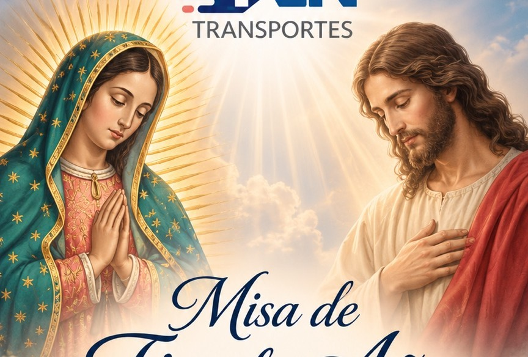

Logística y Transportes
Nuestra celebración de fin de año
Gracias por
un gran 2026
Dos días para agradecer, compartir y celebrar lo que hemos construido juntos.
Fe · Familia · Trabajo · Unión
Un año de bendiciones
REN agradece a Dios y a la Virgen de Guadalupe por las bendiciones recibidas durante este año, y a cada colaborador y su familia por su esfuerzo, compromiso y dedicación.
Cada desafío superado y cada meta alcanzada forman parte de nuestra historia. Hoy queremos reunirnos para agradecer, compartir y celebrar juntos un año más de trabajo, unión y logros.
Primero, agradezcamos ↓
Viernes 11 de diciembre · 2026
Misa de
Fin de Año
Un momento de fe y gratitud para dar gracias por todo lo vivido.
Cuenta regresiva
Sábado 12 de diciembre · 2026
¡Es momento
de celebrar!
Una tarde y noche para disfrutar juntos, con música, alegría y espíritu navideño.
CONTRASTE ★
Grupo Contraste · La Orquesta de las Estrellas
En las tornamesas: DJ WALL-HOUSE
Cuenta regresiva